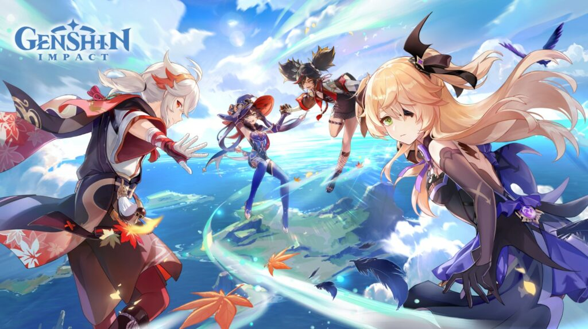
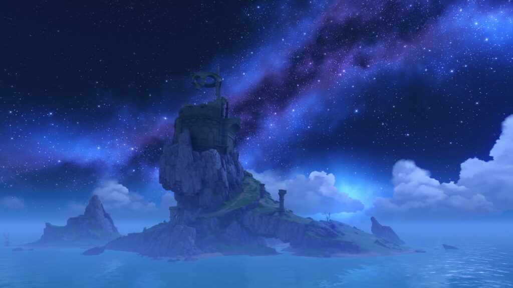

Update Genshin Impact versi 2.8: Mari mengenal Kazuha lebih dekat

Selain itu, Diluc dan Fischl akan tampil berbeda dalam kostum baru mereka, sementara Kaedehara Kazuha dan beberapa karakter lama lainnya akan mendapatkan rerun menemani kedatangan karakter baru, Shikanoin Heizou.
Konten update Genshin Impact versi 2.8
Event Summertime Odyssey: Golden Archipelago
Dengan mengikuti petualangan yang mendebarkan ini, para pemain memiliki kesempatan untuk mendapatkan karakter empat bintang Fischl secara gratis. Golden Apple Archipelago juga menawarkan rekreasi pulau yang menyegarkan untuk dimainkan sendiri atau bersama teman. Dalam event “Resonating Visions”, pemain dapat mengumpulkan keong khusus dan menukarkannya kostum baru Fischl. Sementara dengan event Co-Op terbaru “Reminiscent Regimen”, pemain dapat berlayar bersama teman dan menyelesaikan berbagai tantangan di laut.
Karakter dan skin baru

Di sisi lain, karakter Kaedehara Kazuha siap untuk mengungkapkan lebih banyak tentang dirinya dengan Quest Story chapter pertama miliknya yang akan segera dibuka. Selain itu, temannya yang bernama Shikanoin Heizou, seorang pemecah kasus kejahatan muda yang jenius akan hadir untuk pertama kalinya di v2.8. Siapkah kalian bergabung dengan Heizou untuk menjadi detektif dalam Hangout Event miliknya?
Lalu karakter terbaru, Shikanoin Heizou, adalah pengguna Catalyst jarak dekat pertama di Genshin Impact. Dia dapat memberikan Anemo DMG dengan serangan dan tendangannya yang kuat, dia bahkan dapat memberikan Elemental Damage tambahan kepada musuh yang terkena Hydro/Pyro/Cryo/Electro. Heizou akan tersedia dalam banner rerun Event Wish Kaedehara Kazuha dan Klee pada fase awal v2.8, dan di banner Event Wish Yoimiya di fase update selanjutnya.
Genshin Impact v2.8 akan hadir pada tanggal 13 Juli. Dengan fitur cross-save, pemain dapat memulai petualangan mereka di berbagai platform meliputi PlayStation®, PC, Android, dan iOS.